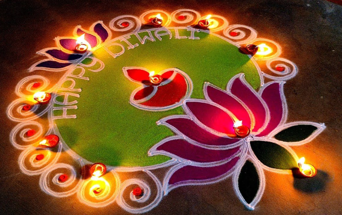
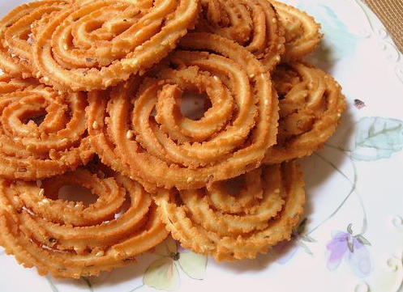

Deepavali ialah perayaan keagamaan terbesar bagi masyarakat Hindu, Sikh, Jain, dan beberapa aliran Buddha di Malaysia, yang melambangkan kemenangan cahaya ke atas kegelapan dan kebaikan ke atas kejahatan, serta permulaan hidup yang baru
Masyarakat Malaysia mengamalkan tradisi rumah terbuka untuk berkongsi perayaan dengan rakan dan keluarga, di mana mereka dihidangkan makanan tradisional.
Menyalakan lampu minyak atau pelita di rumah dan tempat ibadat adalah simbol utama Deepavali.
Seni reka bentuk tradisional yang dibuat dengan serbuk berwarna atau tepung beras di atas lantai, dipercayai membawa kemakmuran.
Perkataan Deepavali berasal dari bahasa Sanskrit yang bermaksud "deretan lampu" (dīpa = lampu, āvali = deretan).
Di India Utara: Deepavali memperingati kemenangan Dewa Rama atas Raja Ravana, raja jahat yang menculik isterinya, Sita. Manusia menyalakan pelita untuk membantu kepulangan mereka yang selamat ke kota Ayodhya setelah 14 tahun dalam pembuangan.
Di India Selatan: Ia disambut sebagai kejayaan Dewa Krishna menewaskan raja syaitan Narakasura dan membebaskan 16,000 wanita yang ditangkap olehnya.
Di India Barat: Deepavali meraikan Dewa Vishnu yang mengusir Raja Bali ke alam kematian.
